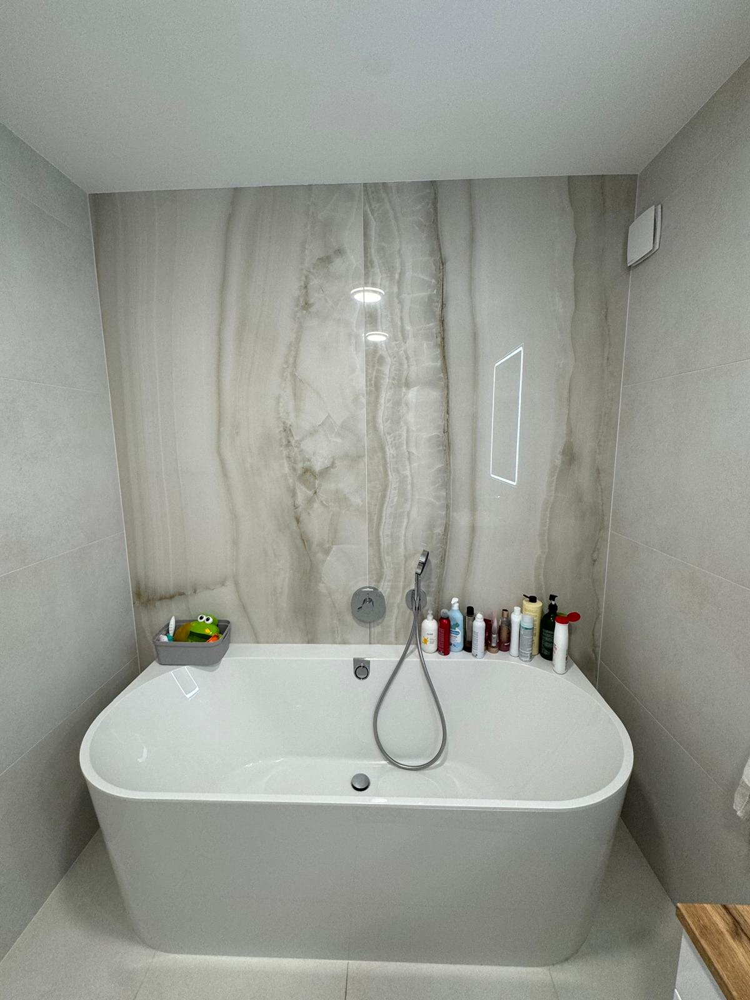

Rekonštrukcia kúpeľne v Bratislave
Nová kúpeľňa v bratislavskom byte. Niekedy len ona. Niekedy posledný kus väčšej zákazky.

Hydroizolácia, spád k odtoku, obklad, ktorý bude vyzerať slušne aj o osem rokov. Radšej raz tú vrstvu, ktorú nikto nefotí.
Sprcha alebo vaňa — oboje je v poriadku. V malom panelákovom jadre sprcha zvyčajne dáva väčší zmysel. Povieme, keď odpad nesedí.
Často kladené otázky
Koľko stojí kúpeľňa v Bratislave?
Bežná paneláková kúpeľňa je často medzi 5 000 a 10 000 €, podľa veľkosti a vybavenia. Kalkulačka dá rozpätie. Skutočné číslo je po obhliadke.
Ako dlho to trvá?
Osem až dvanásť dní, keď ide len o kúpeľňu. Keď sa spája s jadrom, počítajte s tými dvanástimi až štrnástimi.
Sprcha alebo vaňa?
Oboje ide. V malom paneláku sprcha zvyčajne dáva viac miesta. Povieme, keď odpad alebo spád nesedí.